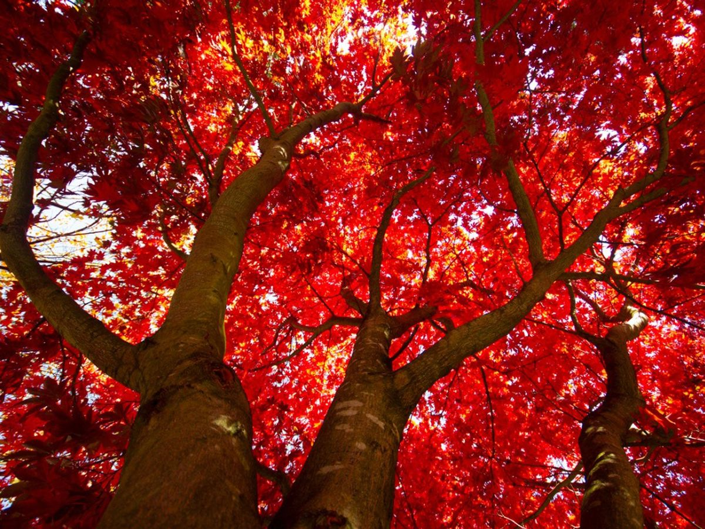

Red Maple
Acer rubrumRed Maple is known for its foliage that turns a vibrant red in the autumn season. This tree is the most common tree in the United States.
Some consider Red Maple an invasive species because how easy it is to grow.

Red Maple is known for its foliage that turns a vibrant red in the autumn season. This tree is the most common tree in the United States.
Some consider Red Maple an invasive species because how easy it is to grow.